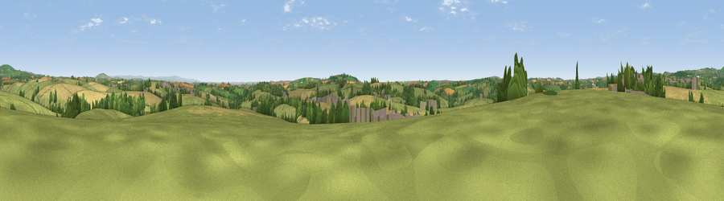

Viewpoint near Menheniot
#17823 in England · top 31% of its area beats it · near Menheniot · path 115 mWhere it is
The exact computed spot (SX 26825 62775). Click the marker for map links.
Public access: the nearest public right of way is about 115 m away — the final stretch may cross private land. Computed from Natural England's CRoW access layer and OpenStreetMap rights of way — not the legal definitive map. Always verify locally.
The view, rendered

A 360° render of this exact spot computed from the terrain model, tree cover and land cover — summer colours, afternoon light, calibrated against photographs of famous viewpoints. Real trees, hedges and buildings will differ in detail.
The panorama
Grey silhouette: terrain skyline in each direction (720 bearings, Earth curvature and refraction included). Dashed green: skyline with trees (+15 m) and buildings (+8 m) as obstacles. Blue strip: how far the ground is visible on each bearing.
Where the view opens
Wedge length = distance to the farthest visible ground on that bearing (vegetation-aware). Rings at 10, 25 and 50 km.
What fills the view
51% grassland · 34% cropland · 12% woodland · 3% built-up
Angular shares of the visible panorama (visual magnitude), not map area. Landscape diversity 0.47 (0–1 Shannon).
Key numbers
More beautiful places nearby
The staircase of upgrades: each row has a higher view potential than everything closer. Driving times are estimates from straight-line distance, calibrated against real road routing — check an actual route before setting out.
| Place | Direction | Drive | Score |
|---|---|---|---|
| Viewpoint near St Keyne | SSW · 2 km | ~5 min | 54.9 |
| Viewpoint near Menheniot | SE · 2 km | ~5 min | 57.1 |
| Viewpoint near St Keyne | WSW · 4 km | ~9 min | 60.3 |
| Viewpoint near Menheniot | ESE · 5 km | ~11 min | 64.0 |
| Bin Down | S · 5 km | ~11 min | 80.2 |
| Viewpoint near Seaton | SSE · 8 km | ~17 min | 81.1 |
| Viewpoint near Downderry | SSE · 9 km | ~18 min | 81.5 |
| Viewpoint near Downderry | SE · 11 km | ~21 min | 83.5 |
50.43921, -4.44009 · source: screening · position refined by local search. Computed location — check access rights before visiting.